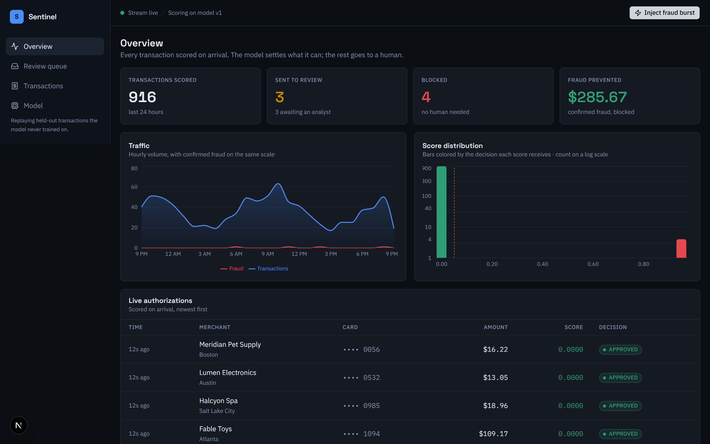
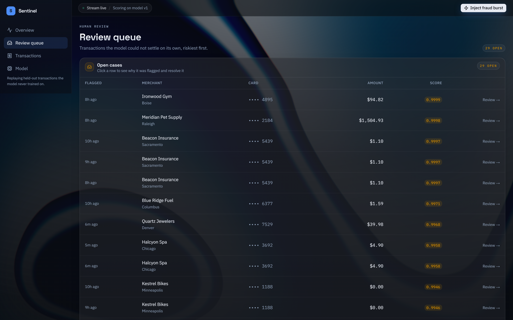
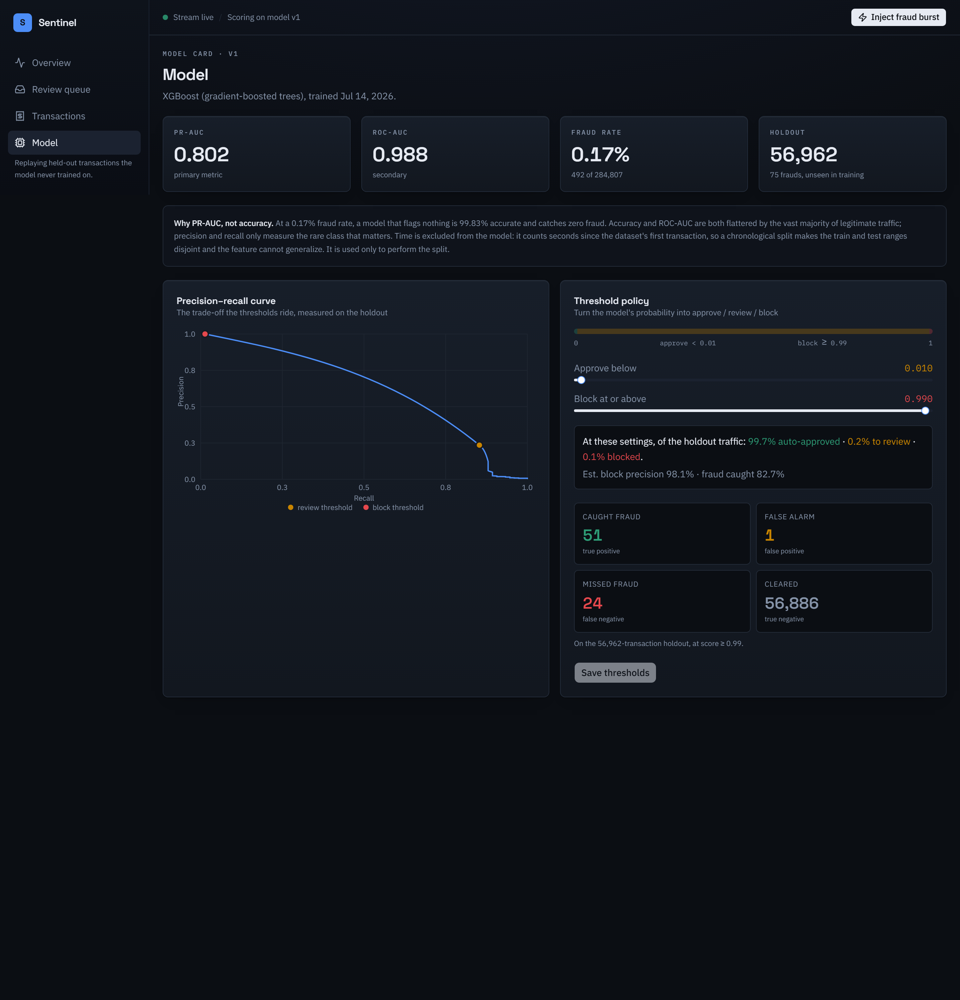
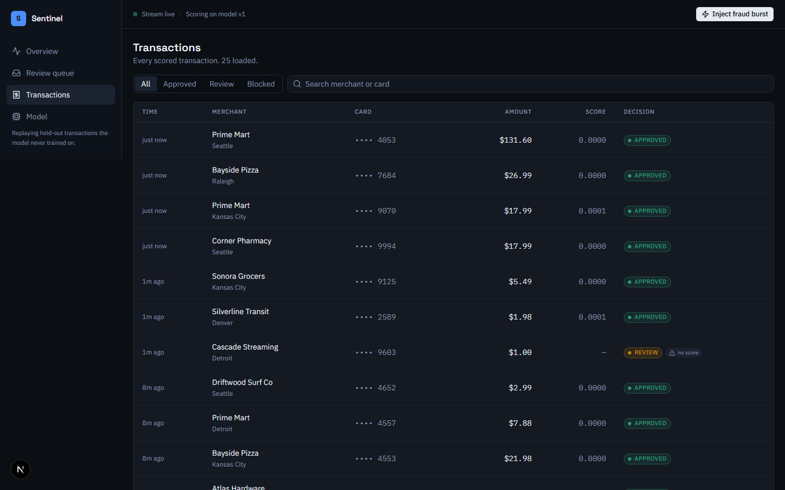

This document is written to be read the night before an interview. It explains the whole system from the data up, and — more importantly — the reasoning behind each decision, phrased the way you'd defend it out loud.
Open with what it is, then what makes it hard, then the outcome:
"Sentinel is the operational system a payments company runs around a fraud model — think Stripe Radar, self-built. Every card transaction is scored the instant it arrives; the model auto-approves the ones it's confident are fine, auto-blocks the ones it's confident are fraud, and sends the uncertain middle to a human analyst with an explanation of why it was flagged."
"The hard part is that fraud is only 0.17% of transactions, so accuracy is useless — a model that flags nothing is 99.83% accurate and catches zero fraud. I built the whole system around that reality: a properly evaluated gradient-boosted model at PR-AUC 0.80, served as ONNX in about two milliseconds, with a human-in-the-loop review queue, tunable decision thresholds, and per-transaction explanations — deployed full-stack on Vercel with a Postgres database."
That paragraph alone signals: you understand the domain, you know why the naive metric fails, you built a system (not a notebook), and you shipped it. Everything below is you being able to go three levels deeper on any sentence in it.
Card fraud detection is a binary classification problem with three properties that make it unlike a textbook classifier:
Every design decision in the project traces back to one of these three. When an interviewer asks "why did you do X," the strongest answer usually starts with "because fraud is 0.17% of traffic…" or "because the two errors have different costs…".
The ULB credit-card fraud dataset (OpenML #1597): 284,807 real anonymized European card transactions from 2013, of which 492 are fraud (0.173%).
| Column | What it is | Used as a feature? |
|---|---|---|
Time | Seconds elapsed since the first transaction in the dataset | No — used only to split the data (see §4) |
V1–V28 | PCA components — the real fields, transformed to anonymize them for privacy | Yes (28 features) |
Amount | Transaction amount (one of only two un-transformed fields) | Yes (1 feature) |
Class | 1 = fraud, 0 = legitimate | Target label |
Final feature vector: 29 dimensions (V1–V28 + Amount).
The live simulator replays transactions drawn only from the held-out test set — data the model never trained on. This means every score shown on the live dashboard is a genuine out-of-sample prediction, not a memorized training row. Small detail, but it's the difference between an honest demo and a rigged one.
A single XGBoost (gradient-boosted trees) binary classifier. Final hyperparameters: depth 8, learning rate 0.05, 232 trees, scale_pos_weight ≈ 545, chosen by a small grid search against a chronological validation slice.
| vs. Logistic regression | The PCA features have non-linear interactions that a linear model can't capture. GBTs find them automatically. (LR is a fine baseline to mention.) |
| vs. Deep neural net | On ~285k rows of tabular data, gradient-boosted trees are the known state of the art — they train in seconds, need no GPU, and are far easier to explain. A neural net would be slower, hungrier for data, and harder to defend. "Right tool for tabular data" is the whole answer. |
| vs. Random forest | Boosting (sequential, error-correcting) generally beats bagging (parallel, variance-reducing) on this kind of problem, and XGBoost has first-class support for the imbalance knob (scale_pos_weight) and the PR-AUC eval metric. |
This is the most important talking point in the project. Rehearse it.
I split train/test chronologically on Time: the model trains on the earlier 80% and is evaluated on the later 20% (56,962 transactions, 75 frauds).
Why not a random split? A random split lets the model train on transactions that happened after ones it's tested on — a subtle data leak that inflates every metric, because in the real world you never get to peek at the future. Fraud is deployed against the future, so it must be measured against the future. Reporting a chronological-split number is both more honest and lower (and being able to explain that is the point).
Time is not a feature (a real bug I caught)My first model included Time and scored PR-AUC 0.7995. I realized the problem: Time is "seconds since the dataset started," so under a chronological split every test row's Time is larger than every training row's — the ranges are disjoint by construction. A tree can only split on thresholds it saw in training, so at serving time every transaction falls off the same end of every Time split. The feature carries zero generalizable signal — only noise. Dropping it raised PR-AUC to 0.8019.
The imbalance is handled with XGBoost's scale_pos_weight ≈ 545 (the ratio of negatives to positives), which tells the model to treat each fraud as ~545× more important during training.
| vs. Undersampling | Throwing away 99% of the legitimate data to balance the classes discards real signal about what "normal" looks like. |
| vs. SMOTE (synthetic oversampling) | Inventing synthetic fraud in PCA space risks fabricating patterns that don't exist. Cost-reweighting keeps the model on the real data distribution and just changes how mistakes are penalized. |
The training pipeline is not a notebook — it has tests that fail the build if:
max(train.Time) < min(test.Time) must hold),This is the "MLOps maturity" signal: the model can't silently regress without a red build.
The model outputs a probability in [0,1]. A decision engine maps it to an action using two thresholds:
| Score range | Action | Rationale |
|---|---|---|
below t_low (0.01) | APPROVED | Confident it's fine — no human needed. |
t_low ≤ score < t_high | REVIEW | Uncertain — send to a human analyst. |
≥ t_high (0.99) | BLOCKED | Confident it's fraud — block automatically. |
A single 0.5 cutoff forces a binary approve/block with no room for "I'm not sure." Two thresholds create a middle band for human judgment — the model handles the easy 99%+, humans handle the ambiguous sliver. That's the human-in-the-loop design.
Where the thresholds sit is not a machine-learning decision — it's a business decision. Lowering t_high blocks more fraud but declines more real customers. The right setting depends on the company's fraud-loss vs. customer-friction trade-off, which changes over time. So I made them a live control on the Model page, with a preview computed from the holdout table.
The defaults come from operating constraints, not a round number:
t_low = the lowest threshold whose review volume stays within analyst capacity (≤0.5% of traffic).t_high = the lowest threshold where auto-blocking is ≥95% precise (so we rarely decline a real customer).t_low so recall ≥ 90%." But the model's ceiling on this holdout is ~85% recall (some frauds simply score near zero). The rule was unsatisfiable and silently collapsed to t_low = 0 — which would route all traffic to human review. I caught it, understood it was a real ceiling, and replaced the rule with the capacity/precision constraints above.| Threshold | Precision | Recall | Fraud caught (of 75) | False positives |
|---|---|---|---|---|
| 0.01 (approve line) | 0.34 | 0.83 | 62 | 121 |
| 0.50 | 0.89 | 0.75 | 56 | 7 |
| 0.99 (block line) | 0.98 | 0.68 | 51 | 1 |
The story these numbers tell: as you raise the bar, precision climbs and recall falls — the fundamental trade-off, visible in three rows. At the block line, the model auto-blocks 51 frauds against a single false positive.
An analyst can't act on "score: 0.94." They need why. The project has two explanation systems, deliberately different, each labeled for what it is.
Computed offline during training over the holdout: the mean absolute SHAP contribution of each feature, i.e. which features drive the model overall. Top features: V14, V4, V12, V11, V10 — and V14 dominating is a known signature of this dataset, which is a nice external sanity check.
Per transaction, at serving time: for each feature, re-score the transaction with that feature "neutralized" to its training median — "what would the score have been if this feature had been unremarkable?" The drop is that feature's impact. All 29 neutralizations are batched into one extra model call, so an explanation costs one inference, not 29.
Exact SHAP is too slow for the request path. So: exact-but-slow SHAP offline for the global view, fast-but-approximate sensitivity online for the per-transaction view. I label each honestly rather than pretending the fast one is exact — which is itself a point of rigor.
The model is trained locally with the full heavy stack (XGBoost, scikit-learn, SHAP, pandas) and exported to ONNX — a 752 KB artifact that the serving function runs with only onnxruntime + numpy.
| Bundle size | Shipping XGBoost + SHAP + pandas into a serverless function is hundreds of MB and slow to cold-start. ONNX + onnxruntime is tiny and boots fast. |
| Clean separation | Training is a heavy, occasional, offline job. Serving is a light, constant, online job. Different lifecycles, different dependencies — the industry-standard shape. |
| Portability | ONNX is a framework-neutral format. The serving layer doesn't care that the model came from XGBoost. |
If the scorer is unreachable, the transaction is still recorded and routed to a human, flagged with scoring_error. The policy is explicit: never silently approve, never auto-block without a score. An outage degrades to "everything gets human review," never to "everything sails through."
┌───────────────────────── Vercel (one deployment) ─────────────────────────┐
│ Next.js (App Router, TypeScript, Tailwind, Recharts) │
│ Pages: Overview · Review queue · Transactions · Model │
│ Node API routes: ingest · feed · stats · cases · settings · simulate │
│ │ /api/py/* (platform rewrite) │
│ ▼ │
│ Python function (FastAPI + onnxruntime) │
│ POST /api/py/score → { probability, topFactors[] } │
└──────────────────────────────┬─────────────────────────────────────────────┘
▼
Postgres (Neon in prod · PGlite locally)
Every transaction goes through one function: score → decide → persist, and the transaction plus (if flagged) its review case are written in a single database transaction so you never get an orphaned case. Two guarantees are enforced by tests:
| Presence-driven simulator | Vercel's free tier runs cron jobs only once a day, so a cron can't power a live feed. Instead the stream advances while someone is watching, throttled server-side (an atomic conditional UPDATE) so ten open tabs still produce one batch per interval — not ten. Framed as a feature: don't simulate traffic nobody is watching. |
| Dual database driver | One code path, two drivers chosen by whether DATABASE_URL is set: PGlite (in-process WASM Postgres) locally so git clone && run needs no database server or credentials; Neon (serverless Postgres) in production. Same schema, same migrations, same queries. |
| Feed cursor on a sequence, not time | Two transactions can share a timestamp; polling on time would skip or replay rows. A monotonic seq makes "everything after N" exact. |
| Case-resolution race protection | Resolving a case is a conditional update ("only if still open"), so two analysts racing on the same case get a 409 instead of silently overwriting each other. |
| Raw features never leave the server | The 29-dim vector is stripped from every API response — it's meaningless to a human and pure payload weight. |
59 automated tests across three layers: 16 Python (leakage guard, PR-AUC floor, ONNX parity, scorer behavior), 39 TypeScript (decision engine boundaries, fail-safe ingest, idempotency, API routes with a real in-memory Postgres), and 4 Playwright end-to-end tests that drive the real app + scorer + database in a browser.
Deployed to Vercel as a single project: the Next.js app and the Python scorer ship together, with Neon Postgres provisioned through Vercel's marketplace. Three problems surfaced only in production — and being able to tell these stories is worth as much as the clean parts.
next build imports every route to collect metadata, and my database module created its connection eagerly at import — so the build tried to boot PGlite in a worker with no database, and crashed. Fix: made the connection lazy (a Proxy that connects on first query), so importing the module is free.VERCEL_URL, which points to the deployment URL. That URL has SSO "Deployment Protection" on, so the self-call was redirected to a login page and failed — every transaction hit the fail-safe and went to review with no score. Fix: pointed the internal call at the public production domain via an env var. (Good story: the fail-safe worked — an outage degraded to human review, exactly as designed.).vercelignore excluding the raw data, local database, and training scripts.The single most useful page for rapid review. Each row is a question you might be asked.
| Decision | Chosen | Over | Because |
|---|---|---|---|
| Model family | XGBoost | Logistic reg / neural net | State of the art on tabular data; captures non-linear interactions; fast, no GPU, explainable. |
| Headline metric | PR-AUC | Accuracy / ROC-AUC | Only PR focuses on the rare class; the others are flattered by the 99.83% easy negatives. |
| Train/test split | Time-based | Random | Random leaks the future into training and inflates metrics; fraud is deployed against the future. |
Time feature | Excluded | Included | Disjoint train/test ranges under a time split → no generalizable signal. Removing it raised PR-AUC. |
| Imbalance handling | Cost reweighting | SMOTE / undersampling | Keeps the real data distribution; no discarded signal, no fabricated fraud. |
| Decision boundary | Two tunable thresholds | One fixed 0.5 cutoff | Creates a human-review band; the cutoff is a business trade-off, not a constant. |
| Serving format | ONNX | Ship XGBoost | Tiny bundle, fast cold start, clean train/serve separation; parity-checked against the trained model. |
| Local explanations | Sensitivity analysis | Exact SHAP | SHAP is too slow for the request path; sensitivity is one batched call and honestly labeled as approximate. |
| Scorer-down behavior | Route to human | Approve / block by default | Fail safe: never silently approve, never auto-block without evidence. |
| Local database | PGlite | Docker Postgres | Zero-setup clone & run; same SQL as prod via one dual-driver module. |
| Prod database | Neon serverless | Traditional Postgres | Serverless-friendly connection model; free tier; native Vercel integration. |
| Live traffic | Presence-driven | Cron job | Free-tier cron is daily-only; also, don't burn compute simulating traffic nobody's watching. |
| Hosting | All-on-Vercel | Split frontend/backend | One repo, one deploy, one URL; Vercel runs Python too, so the model lives beside the app. |
Time couldn't generalize under a time split, and that my "90% recall" threshold rule was mathematically unsatisfiable given the model's ceiling — both required understanding why the numbers were what they were, not just reading them off.Volunteering limitations signals maturity. Have two or three ready.
| Thing | Number / answer |
|---|---|
| What it is | Real-time fraud detection platform: score → auto-decide → human review |
| Dataset | ULB credit-card, 284,807 txns, 492 fraud (0.173%) |
| Model | XGBoost, depth 8, 232 trees, cost-reweighted (~545×) |
| Features | 29 (V1–V28 + Amount); Time excluded on purpose |
| Headline metric | PR-AUC 0.802 (ROC-AUC 0.988) on a time-based holdout |
| Why PR-AUC | Only it focuses on the 0.17% rare class; accuracy/ROC are flattered |
| Decision | Two tunable thresholds → approve / review / block |
| Default thresholds | 0.01 (approve line) / 0.99 (block line) — from capacity & precision constraints |
| At block line | 98% precision, 51/75 fraud caught, 1 false positive |
| Serving | ONNX (752 KB), ~2 ms, parity-checked to 1.2e-7 |
| Explainability | Global SHAP (offline) + per-txn sensitivity (online); top feature V14 |
| Fail-safe | Scorer down → route to human; never silent-approve or blind-block |
| Stack | Next.js + FastAPI + Neon Postgres, all on Vercel; PGlite locally |
| Tests | 59 total: 16 pytest + 39 vitest + 4 Playwright e2e |
| Top 3 stories | (1) dropped Time, model improved; (2) fail-safe caught a prod outage; (3) threshold rule was unsatisfiable |
The four pages of the console. If you screen-share in an interview, this is the order to walk them in — each caption notes the one thing to say on that screen.



